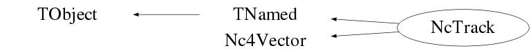

class NcTrack: public TNamed, public Nc4Vector
Class NcTrack Handling of the attributes of a reconstructed particle track. Coding example : Float_t a[4]={195.,1.2,-0.04,8.5}; Nc4Vector pmu; pmu.SetVector(a,"car"); NcTrack t1; t1.Set4Momentum(pmu); Float_t b[3]={1.2,-0.04,8.5}; Nc3Vector p; p.SetVector(b,"car"); NcTrack t2; t2.Set3Momentum(p); t2.SetCharge(0); t2.SetMass(1.115); t1.Data(); t2.Data(); Float_t pi=acos(-1.); Float_t thcms=0.2*pi; // decay theta angle in cms Float_t phicms=pi/4.; // decay theta angle in cms Float_t m1=0.938; Float_t m2=0.140; t2.Decay(m1,m2,thcms,phicms); // Track t2 decay : Lambda -> proton + pion t2.List(); Int_t ndec=t2.GetNdecay(); NcTrack* d1=t2.GetDecayTrack(1); // Access to decay track number 1 NcTrack* d2=t2.GetDecayTrack(2); // Access to decay track number 2 NcSignal s1,s2,s3,s4; .... // Code (e.g. detector readout) to fill NcSignal data NcTrack trec; // Track which will be reconstructed from signals trec.AddSignal(s1); trec.AddSignal(s3); trec.AddSignal(s4); Nc3Vector P; Float_t Q,M; ... // Code which accesses signals from trec and reconstructs 3-momentum P, charge Q, mass M etc... trec.Set3Momentum(P); trec.SetCharge(Q); trec.SetMass(M); Float_t r1[3]={1.6,-3.8,25.7}; Float_t er1[3]={0.2,0.5,1.8}; Float_t r2[3]={8.6,23.8,-6.7}; Float_t er2[3]={0.93,1.78,0.8}; NcPosition begin,end; begin.SetPosition(r1,"car"); begin.SetPositionErrors(er1,"car"); end.SetPosition(r2,"car"); end.SetPositionErrors(er2,"car"); trec.SetBeginPoint(begin); trec.SetEndPoint(end); Note : By default all quantities are in GeV, GeV/c or GeV/c**2 but the user can indicate the usage of a different scale for the energy-momentum units via the SetEscale() memberfunction. The actual energy-momentum unit scale can be obtained via the GetEscale() memberfunction. --- Author: Nick van Eijndhoven 10-jul-1997 Utrecht University - Modified: NvE $Date: 2013-08-18 20:14:09 +0200 (Sun, 18 Aug 2013) $ NCFS
Function Members (Methods)
public:
protected:
| virtual void | TObject::DoError(int level, const char* location, const char* fmt, va_list va) const |
| Double_t | Nc4Vector::GetScaLong() |
| Double_t | Nc4Vector::GetScaTrans() |
| void | Init() |
| void | TObject::MakeZombie() |
Data Members
public:
| enum TObject::EStatusBits { | kCanDelete | |
| kMustCleanup | ||
| kObjInCanvas | ||
| kIsReferenced | ||
| kHasUUID | ||
| kCannotPick | ||
| kNoContextMenu | ||
| kInvalidObject | ||
| }; | ||
| enum TObject::[unnamed] { | kIsOnHeap | |
| kNotDeleted | ||
| kZombie | ||
| kBitMask | ||
| kSingleKey | ||
| kOverwrite | ||
| kWriteDelete | ||
| }; |
protected:
| NcPositionObj* | fBegin | The begin-point of the track |
| NcPositionObj* | fClosest | The (extrapolated) point of closest approach w.r.t some reference |
| Int_t | fCode | The user defined particle id code |
| TObjArray* | fDecays | The array of decay produced tracks |
| Double32_t | Nc4Vector::fDresult | ! The error on the scalar result of an operation (e.g. dotproduct) |
| Double32_t | Nc4Vector::fDv0 | The error on the scalar part |
| Double32_t | Nc4Vector::fDv2 | The error on the Lorentz invariant |
| NcPositionObj* | fEnd | The end-point of the track |
| Float_t | fEscale | The scale of the energy-momentum units of the track |
| TObject* | fFit | Object containing details of the fit |
| Int_t | fHypCopy | Flag to denote storage of private copies of hypothesis tracks |
| TObjArray* | fHypotheses | The array of track hypotheses |
| NcPositionObj* | fImpactXY | The (extrapolated) impact-point in the plane z=0 |
| NcPositionObj* | fImpactXZ | The (extrapolated) impact-point in the plane y=0 |
| NcPositionObj* | fImpactYZ | The (extrapolated) impact-point in the plane x=0 |
| TString | TNamed::fName | object identifier |
| NcTrack* | fParent | Pointer to the parent track |
| Float_t | fProb | Probability for this track as a hypothesis |
| Float_t | fQ | The charge of the particle |
| NcPositionObj* | fRef | The reference-point of the track for the 3-momentum vector |
| Int_t | Nc4Vector::fScalar | Flag denoting scalar mode |
| TObjArray* | fSignals | The array of related NcSignals |
| TObjArray* | fTemp | ! Temporary storage for exchange of object pointers |
| TString | TNamed::fTitle | object title |
| NcTimestamp* | fTstamp | The track timestamp |
| NcSignal* | Nc4Vector::fUser | NcSignal object containing user data |
| Int_t | fUserId | The user defined identifier |
| Nc3Vector | Nc4Vector::fV | The 3-vector part |
| Double32_t | Nc4Vector::fV0 | The scalar part |
| Double32_t | Nc4Vector::fV2 | The Lorentz invariant (v^i*v_i) |
Class Charts
{kind=link}
{kind=link}
{kind=link}
{kind=link}

Function documentation
~NcTrack()
void Reset()
Reset all variables to 0 and delete all auto-generated decay tracks. Notes : 1) The scale for the energy/momentum units will not be changed. 2) The HypCopy mode is maintained as it was set (by the user) before.
void Set3Momentum(Nc3Vector& p)
Set the track parameters according to the 3-momentum p. In case the mass was not yet set, the energy is set to correspond to m=0.
void SetMass(Double_t m, Double_t dm = 0)
Set the particle mass The default value for the error dm is 0.
void Data(TString f = "car", TString u = "rad")
Provide track information within the coordinate frame f The string argument "u" allows to choose between different angular units in case e.g. a spherical frame is selected. u = "rad" : angles provided in radians "deg" : angles provided in degrees The defaults are f="car" and u="rad".
void List(TString f = "car", TString u = "rad")
Provide current track and decay level 1 information within coordinate frame f The string argument "u" allows to choose between different angular units in case e.g. a spherical frame is selected. u = "rad" : angles provided in radians "deg" : angles provided in degrees The defaults are f="car" and u="rad".
void ListAll(TString f = "car", TString u = "rad")
Provide complete track and decay information within the coordinate frame f The string argument "u" allows to choose between different angular units in case e.g. a spherical frame is selected. u = "rad" : angles provided in radians "deg" : angles provided in degrees The defaults are f="car" and u="rad".
void Dumps(NcTrack* t, Int_t n, TString f, TString u)
Recursively provide the info of all decay levels of this track
Double_t GetMomentum(Float_t scale = -1)
Provide the value of the track 3-momentum. By default the momentum is returned in the units as it was stored in the track structure. However, the user can select a different momentum unit scale by specification of the scale parameter. The convention is that scale=1 corresponds to GeV/c, so specification of scale=0.001 will provide the momentum in MeV/c. The error can be obtained by invoking GetResultError() after invokation of GetMomentum().
Nc3Vector Get3Momentum(Float_t scale = -1) const
Provide the track 3-momentum. By default the components of the 3-momentum are returned in the units as they were stored in the track structure. However, the user can select a different momentum unit scale for the components by specification of the scale parameter. The convention is that scale=1 corresponds to GeV/c, so specification of scale=0.001 will provide the 3-momentum in MeV/c.
Double_t GetMass(Float_t scale = -1)
Provide the particle mass. By default the mass is returned in the units as it was stored in the track structure. However, the user can select a different mass unit scale by specification of the scale parameter. The convention is that scale=1 corresponds to GeV/c**2, so specification of scale=0.001 will provide the mass in MeV/c**2. The error can be obtained by invoking GetResultError() after invokation of GetMass().
Double_t GetEnergy(Float_t scale = -1)
Provide the particle's energy. By default the energy is returned in the units as it was stored in the track structure. However, the user can select a different energy unit scale by specification of the scale parameter. The convention is that scale=1 corresponds to GeV, so specification of scale=0.001 will provide the energy in MeV. The error can be obtained by invoking GetResultError() after invokation of GetEnergy().
void Decay(Double_t m1, Double_t m2, Double_t thcms, Double_t phicms)
Perform 2-body decay of current track m1 : mass of decay product 1 m2 : mass of decay product 2 thcms : cms theta decay angle (in rad.) of m1 phicms : cms phi decay angle (in rad.) of m1
NcTrack* GetDecayTrack(Int_t j) const
Provide decay produced track number j Note : j=1 denotes the first decay track
void AddSignal(NcSignal& s, Int_t mode = 0)
Relate an NcSignal object to this track. mode = 0 : Only the reference to the specified signal is stored in the current track, without storing the (backward) reference to this track into the NcSignal structure. 1 : The (backward) reference to the current track is also automatically stored into the NcSignal (or derived) object specified in the input argument. The default is mode=0.
void RemoveSignal(NcSignal& s, Int_t mode = 1)
Remove related NcSignal object from this track. mode = 0 : Only the reference to the specified signal is removed from the current track, without removing the (backward) reference(s) to this track from the NcSignal structure. 1 : The (backward) reference(s) to the current track are also automatically removed from the NcSignal (or derived) object specified in the input argument. The default is mode=1.
void RemoveSignals(Int_t mode = 1)
Remove all related NcSignal objects from this track. mode = 0 : All signal references are removed from the current track, without removing the (backward) references to this track from the corresponding NcSignal objects. 1 : The (backward) references to the current track are also automatically removed from the corresponding NcSignal (or derived) objects. The default is mode=1.
Int_t GetNsignals(const char* classname, Int_t par = 0) const
Provide the number of stored signals (derived) of the specified class.
par = 0 ==> The signal itself has to be (derived) of the specified class
1 ==> The parent device of the signal has to be (derived) of the specified class
2 ==> The signal or the parent device has to be (derived) of the specified class
The default is par=0.
NcSignal* GetSignal(Int_t j) const
Provide the related NcSignal number j. Note : j=1 denotes the first signal.
TObjArray* GetSignals(const char* classname, Int_t par = 0, TObjArray* signals = 0)
Provide references to the stored signals (derived) from the specified class.
par = 0 ==> The signal itself has to be (derived) from the specified class
1 ==> The parent device of the signal has to be (derived) from the specified class
2 ==> The signal or the parent device has to be (derived) from the specified class
The default is par=0.
Note :
In case signals=0 the selected signal pointers are returned via a multi-purpose array,
which will be overwritten by subsequent selections (not restricted to signal selections).
It is recommended to provide a user defined array via the argument "signals"
to omit the danger of overwriting the selection and to allow to use the selected signal list
amongst other selections.
In case a user defined array "signals" is provided, this memberfunction returns 0 for the
return argument.
The default is signals=0.
void ShowSignals(const char* classname, Int_t par = 0, Int_t mode = 1, TString f = "car", TString u = "rad")
Show all the associated signals (derived) from the specified class.
par = 0 ==> The signal itself has to be (derived) of the specified class
1 ==> The parent device of the signal has to be (derived) of the specified class
2 ==> The signal or the parent device has to be (derived) of the specified class
mode = 0 ==> Only the number of signals will be provided.
1 ==> Full listing of all the signals will be provided.
2 ==> Same as mode=1 but with additional location info of the owning device.
Default values are par=0 and mode=1.
The arguments "f" and "u" have the same meaning as in the memberfunction Data().
Double_t GetSignalValue(TString classname, TString varname, Int_t mode = 0, Int_t par = 2)
Provide the total sum of the value of variable "varname" of all the associated signals (derived) from the specified class. par = 0 ==> The signal itself has to be (derived) of the specified class 1 ==> The parent device of the signal has to be (derived) of the specified class 2 ==> The signal or the parent device has to be (derived) of the specified class The default is par=2. The argument "mode" has the same meaning as in the memberfunction GetSignal() of the class NcSignal. Also here the default value is mode=0.
void SetHypCopy(Int_t flag)
(De)activate the creation of private copies of the added hypothesis tracks.
flag = 0 : No private copies are made; pointers of original tracks are stored.
1 : Private copies of the tracks are made and these pointers are stored.
Notes :
In case a private copy is made, this is performed via the Clone() memberfunction.
All tracks have the default TObject::Clone() memberfunction.
However, tracks generally contain an internal (signal) data structure
which may include pointers to other objects. Therefore it is recommended to provide
for all tracks a specific copy constructor and override the default Clone()
memberfunction using this copy constructor.
Once the storage contains pointer(s) to track(s) one cannot change the HypCopy mode anymore.
To change the HypCopy mode for an existing NcTrack containing hypothesis tracks, one first
has to invoke Reset().
Int_t GetHypCopy() const
Provide value of the DevCopy mode.
mode = 0 : No private copies are made; pointers of original tracks are stored.
1 : Private copies of the tracks are made and these pointers are stored.
Note :
In case a private copy is made, this is performed via the Clone() memberfunction.
All tracks have the default TObject::Clone() memberfunction.
However, tracks generally contain an internal (signal) data structure
which may include pointers to other objects. Therefore it is recommended to provide
for all tracks a specific copy constructor and override the default Clone()
memberfunction using this copy constructor.
void AddTrackHypothesis(NcTrack& t)
Relate a track hypothesis "t" to the current track. Note : By default a private copy of the input track will be made via the Clone() facility. See the memberfunction SetHypCopy() to suppress the creation of a private copy so that only the pointer to the input track will be stored.
void AddTrackHypothesis(Double_t prob, Double_t m, Double_t dm = 0)
Add a track hypothesis by explicitly setting the mass and probability. This will affect e.g. the hypothesis track's energy, since the momentum and all other attributes will be copied from the current track. Note that this will always result in a newly created track. Input arguments : prob=probalility m=mass value dm=error on the mass value. The default value for the mass error dm is 0.
NcTrack* GetTrackHypothesis(Int_t j = 0) const
Provide the j-th track hypothesis. Note : j=1 denotes the first hypothesis. Default : j=0 ==> Hypothesis with highest probability.
void SetReferencePoint(NcPosition& p)
Store the position of the track reference-point. The reference-point is the point on the track in which the 3-momentum vector components have been defined. This reference point is the preferable point to start track extrapolations etc... which are sensitive to the components of the 3-momentum vector.
NcPosition* GetReferencePoint()
Provide the position of the track reference-point. The reference-point is the point on the track in which the 3-momentum vector components have been defined. This reference point is the preferable point to start track extrapolations etc... which are sensitive to the components of the 3-momentum vector.
Double_t GetPt(Float_t scale = -1)
Provide the transverse momentum value w.r.t. z-axis. By default the value is returned in the units as it was stored in the track structure. However, the user can select a different momentum unit scale by specification of the scale parameter. The convention is that scale=1 corresponds to GeV/c, so specification of scale=0.001 will provide the transverse momentum in MeV/c. The error on the value can be obtained by GetResultError() after invokation of GetPt().
Double_t GetPl(Float_t scale = -1)
Provide the longitudinal momentum value w.r.t. z-axis. By default the value is returned in the units as it was stored in the track structure. However, the user can select a different momentum unit scale by specification of the scale parameter. The convention is that scale=1 corresponds to GeV/c, so specification of scale=0.001 will provide the longitudinal momentum in MeV/c. Note : the returned value can also be negative. The error on the value can be obtained by GetResultError() after invokation of GetPl().
Double_t GetEt(Float_t scale = -1)
Provide transverse energy value w.r.t. z-axis. By default the value is returned in the units as it was stored in the track structure. However, the user can select a different energy unit scale by specification of the scale parameter. The convention is that scale=1 corresponds to GeV, so specification of scale=0.001 will provide the transverse energy in MeV. The error on the value can be obtained by GetResultError() after invokation of GetEt().
Double_t GetEl(Float_t scale = -1)
Provide longitudinal energy value w.r.t. z-axis. By default the value is returned in the units as it was stored in the track structure. However, the user can select a different energy unit scale by specification of the scale parameter. The convention is that scale=1 corresponds to GeV, so specification of scale=0.001 will provide the longitudinal energy in MeV. Note : the returned value can also be negative. The error on the value can be obtained by GetResultError() after invokation of GetEl().
Double_t GetMt(Float_t scale = -1)
Provide transverse mass value w.r.t. z-axis. By default the value is returned in the units as it was stored in the track structure. However, the user can select a different energy unit scale by specification of the scale parameter. The convention is that scale=1 corresponds to GeV, so specification of scale=0.001 will provide the transverse mass in MeV. The error on the value can be obtained by GetResultError() after invokation of GetMt().
Double_t GetRapidity()
Provide rapidity value w.r.t. z-axis. The error on the value can be obtained by GetResultError() after invokation of GetRapidity(). Note : Also GetPseudoRapidity() is available since this class is derived from Nc4Vector.
void SetImpactPoint(NcPosition& p, TString q)
Store the position of the impact-point in the plane "q=0".
Here q denotes one of the axes X, Y or Z.
Note : The character to denote the axis may be entered in lower or
in uppercase.
NcPosition* GetImpactPoint(TString q)
Provide the position of the impact-point in the plane "q=0".
Here q denotes one of the axes X, Y or Z.
Note : The character to denote the axis may be entered in lower or
in uppercase.
void SetClosestPoint(NcPosition& p)
Set position p as the point of closest approach w.r.t. some reference
void SetEscale(Float_t scale)
Indicate the energy/momentum scale as used by the user. The convention is that scale=1 indicates values in units of GeV, GeV/c or GeV/c**2. So, in case one decides to store values in units of MeV, MeV/c or MeV/c**2 the scale indicator should be set to scale=0.001. By default scale=1 is set in the constructor.
Float_t GetEscale() const
Provide the energy/momentum scale as used by the user. The convention is that scale=1 indicates values in units of GeV, GeV/c or GeV/c**2. So, a value of scale=0.001 indicates that energy/momentum values are stored in units of MeV, MeV/c or MeV/c**2.
void SetFitDetails(TObject* obj)
Enter the object containing the fit details. In case an object to hold fit details was already present, this will be deleted first before the new one is stored. This means that SetFitDetails(0) can be used to just remove the existing object with the fit details. All objects derived from TObject can be entered in this way. Obvious candidates for objects containing detailed fit information are functions (e.g. TF1) and histograms (e.g. TH1F). However, using an NcDevice object provides a very versatile facility to store the parameters of various fit procedures. In such a case the NcDevice can be used to provide the various fit definitions and the corresponding fit parameters can be entered as separate NcSignal objects which are stored as hits to the NcDevice. In addition various functions and histograms can be linked to the various NcSignal instances The latter procedure is based on the original idea of Adam Bouchta. Note : The entered object is owned by this NcTrack instance. As such, a private copy of obj will be stored using the Clone() memberfunction. In case the entered object contains pointers to other objects, the user has to provide the appropriate Clone() memberfunction for the class to which the entered object belongs. An example can be seen from NcTrack::Clone().
Double_t GetDistance(NcPosition* p, Float_t scale = -1)
Provide distance of the current track to the position p. The error on the result can be obtained as usual by invoking GetResultError() afterwards. By default the distance will be provided in the metric unit scale of the NcPosition p. However, the user can select a different metric unit scale by specification of the scale parameter. The convention is that scale=1 corresponds to meter, so specification of scale=0.01 will provide the distance in cm. As such it is possible to obtain a correctly computed distance even in case the track parameters have a different unit scale. However, it is recommended to work always with one single unit scale. Note : In case of incomplete information, a distance value of -1 is returned.
Double_t GetDistance(NcTrack* t, Float_t scale = -1)
Provide distance of the current track to the track t. The error on the result can be obtained as usual by invoking GetResultError() afterwards. By default the distance will be provided in the metric unit scale of the current track. This implies that the results of t1.GetDistance(t2) and t2.GetDistance(t1) may be numerically different in case t1 and t2 have different metric units. However, the user can specify a required metric unit scale by specification of the scale parameter. The convention is that scale=1 corresponds to meter, so specification of scale=0.01 will provide the distance in cm. As such it is possible to obtain a correctly computed distance even in case the track parameters have a different unit scale. However, it is recommended to work always with one single unit scale. Note : In case of incomplete information, a distance value of -1 is returned.
TObject* Clone(const char* name = "") const
Make a deep copy of the current object and provide the pointer to the copy. This memberfunction enables automatic creation of new objects of the correct type depending on the object type, a feature which may be very useful for containers when adding objects in case the container owns the objects. This feature allows e.g. NcJet to store either NcTrack objects or objects derived from NcTrack via the AddTrack memberfunction, provided these derived classes also have a proper Clone memberfunction.
void SetFitDetails(TObject* obj)
Double_t GetDistance(NcPosition* p, Float_t scale = -1)